얼굴로 출석하고 이름표를 뽑는 키오스크, 지금 어디까지 왔나
태블릿 키오스크(Faith ID)가 얼굴을 인식해 이름표를 출력하고 출석을 남깁니다. 별도 태블릿의 DB 서버(Faith DB Server)가 얼굴 데이터와 출석부를 모아 여러 키오스크에 나눠 줍니다. 이 문서는 두 앱의 기능과 처리 흐름, 요구사항별 구현 상태, 실제 실행으로 확인한 문제를 기록합니다.
1요약
핵심 기능인 얼굴 등록, 실시간 인식, 이름표 출력, 서버 승인, 증분 동기화는 코드로 모두 구현돼 있습니다. 하지만 실행해 보니 서버 앱이 Android 14 이상에서 켜지자마자 종료되고, 승인·관리 API에 인증 검사가 빠져 있었습니다. 출석 기능은 이름 하나만 기록하는 최소 형태라서, 출석 관리를 본격적으로 쓰려면 데이터 모델부터 다시 잡아야 합니다.
요구사항 42건 구현 상태
확인된 문제 16건
코드 규모
Kotlin 줄 수. 테스트 코드는 0줄입니다.
I-01 서버 앱 Manifest에 FOREGROUND_SERVICE_DATA_SYNC 권한이 없어 Android 14 이상에서 서버를 시작하는 순간 앱이 종료됩니다. 현재 Galaxy Tab S7+의 최신 OS도 해당합니다.
I-02 서버의 승인·관리 API에 인증 검사가 없습니다. 관리자 로그인은 서버 화면에만 걸려 있어서, 얼굴 데이터를 승인된 키오스크만 쓴다는 전제가 지켜지지 않습니다.
2시스템 구성
키오스크 여러 대와 서버 한 대가 같은 사내 Wi-Fi에 연결됩니다. 서버는 별도 PC가 아니라 Android 태블릿 위에서 앱으로 실행됩니다. 키오스크는 얼굴 DB 사본을 로컬에 들고 인식하므로, 서버가 하는 일은 데이터의 기준본 보관, 변경 전파, 출석부 기록입니다.
/sdcard/faceDB에 날짜별로 쌓이고, 엑셀에서 바로 열 수 있습니다.저장소 구성
| 위치 | 내용 | 상태 |
|---|---|---|
| android_testbed/app | Faith ID 키오스크. Kotlin 10개 파일, 8,452줄. Buffalo-L 모델(174 MB)을 APK에 넣어 APK가 230 MB입니다. | 현재 개발 본체 |
| android_testbed/dbserver | Faith DB Server. Kotlin 6개 파일, 3,868줄. Ktor CIO 서버와 관리 화면. | 현재 개발 본체 |
| android_testbed/common | 두 앱이 함께 쓰는 메타데이터 처리 (FaceRecordMetadata.kt). 2026-05-30 커밋에서 분리. | 공통 |
| 루트 *.py | PySide6 + insightface로 만든 데스크톱 프로토타입. 3월 이후 변경 없음. | 보관용 |
| reports/*.md | 2026-03-14 기준 보고서 2건. JSON DB와 예전 API를 설명하고 있어 현재 코드와 맞지 않습니다. | 구버전 |
3Faith ID 키오스크
키오스크는 카메라 앞 사람을 계속 분석해서 세 갈래로 나눕니다. 처음 보는 얼굴이면 등록을 권하고, 확실히 아는 얼굴이면 바로 출력 버튼을 띄우고, 비슷한 사람이 여럿이면 후보를 보여 주고 고르게 합니다. 서버에 연결되지 않으면 인식 자체를 멈춥니다.
화면 흐름
computeMonitorDecision, applyMonitorDecision, goTo.인식 파이프라인
프레임 하나가 판정 점수가 되기까지 일곱 단계를 거칩니다. 얼굴 검출은 Google ML Kit, 얼굴 특징값(임베딩)은 InsightFace Buffalo-L 패키지의 ArcFace ResNet-50 모델을 ONNX Runtime으로 돌려 얻습니다. 비교 대상은 사람마다 저장된 임베딩들의 평균(중심 벡터) 하나입니다.
FaceRecognitionEngine.kt, MainActivity.analyzeFrame.판정 기준과 등록 품질 필터
등록 절차
- 미등록 판정에서 등록 시작하기를 누릅니다.
- 4프레임마다 얼굴 방향을 랜드마크로 계산합니다. 코가 눈 중심에서 좌우로 0.10 이상 벗어나면 좌·우, 세로 비율이 0.42 이하·0.62 이상이면 상·하로 봅니다.
- 요청한 방향과 일치하고 유사도 필터(0.35–0.85)를 통과하면 샘플로 저장합니다. 방향마다 3장, 모두 12장.
- 이름·부서·학년을 입력하고 저장합니다. 로컬 DB에 쓰고 곧바로 서버로 업로드합니다.
출력 경로
- Nemonic: 전용 SDK, Bluetooth MAC 지정. 결과 코드가 OK일 때 출석 기록.
- Brother QL-820NWB: Brother Print SDK. 페어링 기기 검색과 장착 용지 읽기 지원.
- 시스템 인쇄: Android 인쇄 프레임워크. 인쇄 대화상자로 넘기는 순간 성공으로 처리합니다(I-05).
- 공통으로 이미지 템플릿 위에 속성 3개(기본 이름·부서·학년)를 크기와 위치를 지정해 그립니다.
실제 화면
아래는 에뮬레이터에서 원본 APK를 실행해 캡처한 화면입니다. 에뮬레이터 카메라는 사람 얼굴 대신 테스트 패턴을 보여 주므로, 인식 결과 화면은 그림 2로 대신합니다.
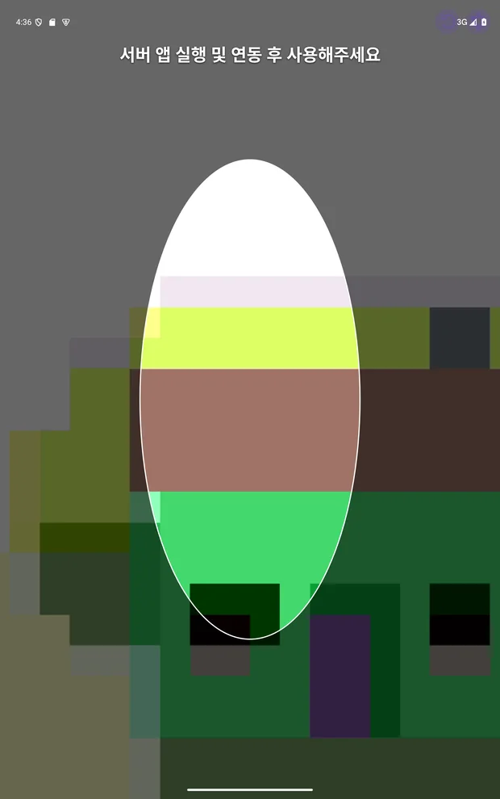
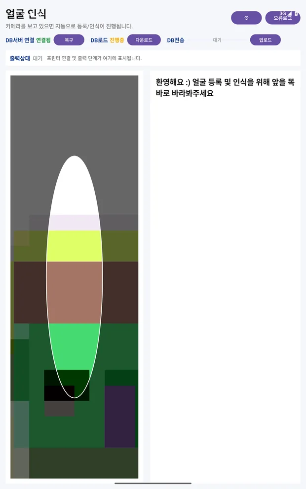
설정 화면
설정은 탭 6개로 나뉩니다. 운영 현장에서 바꿀 값과 개발 중에만 만질 값이 한 화면에 섞여 있고, 모든 값이 숫자 입력란이라 범위 안내가 없습니다.
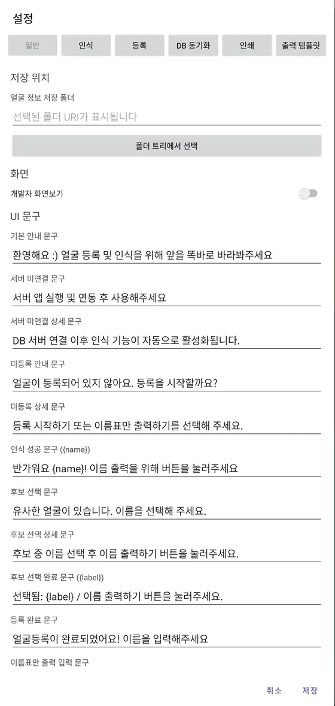
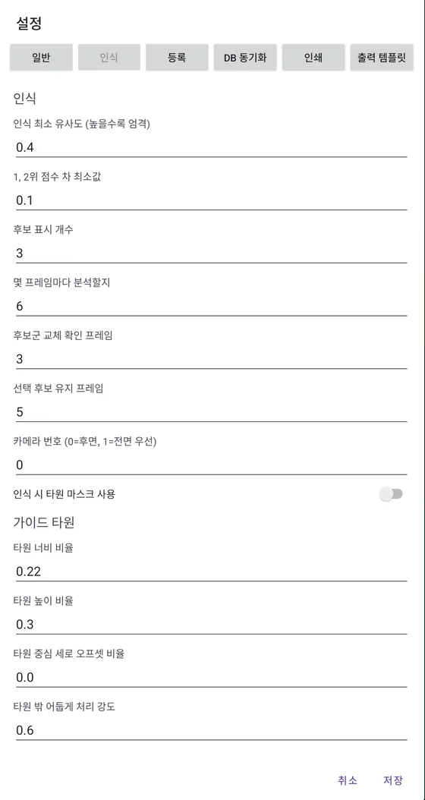
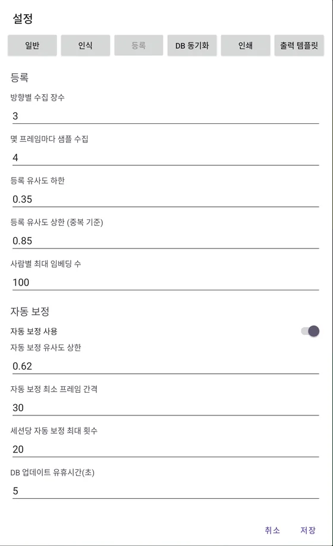
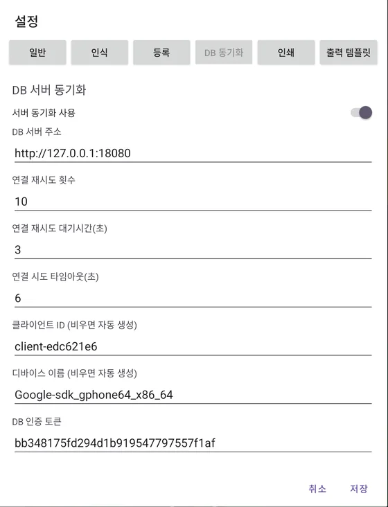
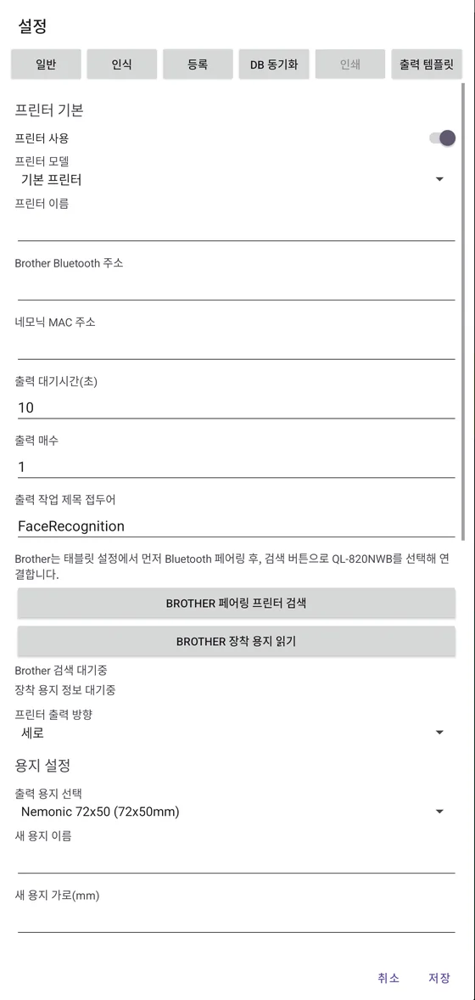
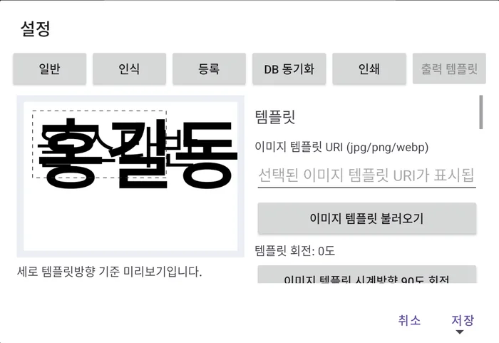
4Faith DB Server
서버 앱은 실행하면 저장 폴더의 DB를 읽고 곧바로 웹서버를 띄운 다음 로그인 화면을 보여 줍니다. 로그인하면 관리 대시보드 한 화면에서 서버 시작·중지, 승인, 접속 상태, DB 표, 로그를 다룹니다.
원본 faith_db.apk는 API 35에서 시작 1초 안에 SecurityException: Starting FGS with type dataSync … requires FOREGROUND_SERVICE_DATA_SYNC로 종료됐습니다. 아래 캡처는 작업 사본에서 이 권한 한 줄만 추가해 빌드한 APK로 찍었습니다. 저장소 코드는 바꾸지 않았습니다.
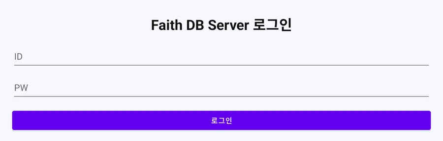
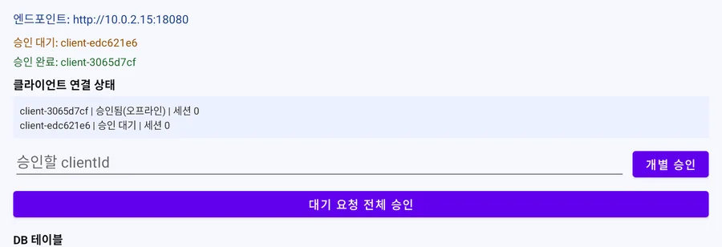
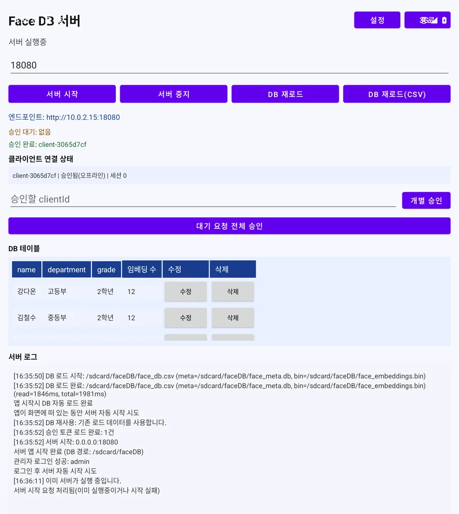
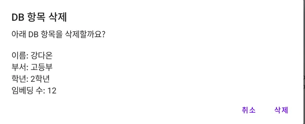
관리 기능
- 서버 시작·중지, 포트 변경
- DB 재로드, CSV 메타데이터 재로드(엑셀로 이름·부서를 고친 뒤 반영)
- 클라이언트 개별·전체 승인, 연결 상태와 세션 수
- 인물별 이름·부서·학년 수정, 삭제
- 설정: 관리자 ID·PW, 기본 포트, DB 폴더 (
config.yaml)
API
| 메서드 | 경로 | 인증 | 용도 |
|---|---|---|---|
| GET | /api/health | 없음 | 서버 생존 확인. 키오스크는 주소 후보를 돌며 이것으로 서버를 찾습니다. |
| POST | /api/auth/request | 없음 | 승인 요청. 처음이면 대기 목록에 올리고, 승인된 기기에는 토큰을 줍니다. |
| GET | /api/auth/status | 없음 (I-02) | 승인 상태 조회. |
| GET | /api/auth/pending · /approved | 없음 (I-02) | 대기·승인 기기 목록. 관리 화면용. |
| POST | /api/auth/approve · /approve-all | 없음 (I-02) | 승인 처리. 관리 화면용. |
| GET | /api/db/hash-summary | 토큰 | 인물별 personKey → hash 목록. |
| POST | /api/db/delta/pull · /push | 토큰 | 변경분 내려받기·올리기 (FDD1 바이너리). |
| GET · POST | /api/db/structured/meta · /bin · /push | 토큰 | DB 전체 파일 교환. 스키마가 다르거나 델타 적용이 실패할 때 사용. |
| POST | /api/attendance/mark | 토큰 | 출석 기록. 본문은 name, affiliation, department. |
| WS | /ws/db-updates?token=… | 토큰 | DB 리비전이 오를 때 db_update 알림. 접속 직후 한 번 보냄. |
| GET · POST | /api/db · /db/push · /db/diff | 토큰 | 예전 JSON 방식. 410 Gone으로 막혀 있습니다. |
승인 흐름
새 키오스크는 처음 접속할 때 승인 요청을 보내고 대기합니다. 관리자가 서버 화면에서 승인하면 토큰이 발급되고, 키오스크는 이 토큰을 저장해 두었다가 이후 모든 요청에 씁니다. 승인 정보는 서버 내부 저장소의 auth_state.json에 남아 서버를 다시 켜도 유지됩니다. 토큰에는 만료나 폐기 기능이 없습니다. 승인·관리 API의 인증 문제는 8장 I-02에 정리했습니다.
5동기화 프로토콜
키오스크와 서버는 인물마다 해시를 비교해 달라진 사람만 주고받습니다. 등록이나 자동 보정으로 바뀐 사람을 올리면 서버가 리비전을 올리고 WebSocket으로 알립니다. 알림을 받은 다른 키오스크는 자기 해시 목록을 보내 차이만 내려받고, 인식이 5초 동안 없을 때 적용합니다.
reconcileLatestCore). 델타 적용이 실패하거나 인원 수가 서버와 다르면 DB 파일 전체(structured/meta, structured/bin)를 받아 복구합니다. 실측에서는 접속 직후 같은 내려받기가 3번 연달아 실행됐습니다(I-13).변경분 형식 (FDD1)
exportDeltaBundle). 그래서 서버에서 지운 사람이 오프라인이던 키오스크가 다시 올릴 때 되살아날 수 있습니다(I-10).저장 파일
| 파일 | 위치 | 내용 |
|---|---|---|
| face_db.csv | 키오스크·서버 /sdcard/faceDB | 사람이 엑셀로 고칠 수 있는 메타데이터. person_id, name, department, grade와 추가 열. |
| face_meta.db | 키오스크·서버 /sdcard/faceDB | SQLite 인덱스. person_key, 순번, 임베딩 위치·개수·차원, 해시, 메타데이터 묶음. |
| face_embeddings.bin | 키오스크·서버 /sdcard/faceDB | 모든 사람의 임베딩을 float32로 이어 붙인 파일. |
| attendance_YYYY-MM-DD.csv | 서버 /sdcard/faceDB | 날짜별 출석부. 6장 참고. |
| auth_state.json · config.yaml | 서버 앱 내부 저장소 | 승인된 기기와 토큰, 관리자 계정·포트·DB 폴더. 비밀번호는 평문입니다. |
| logs/db_sync_client.log | 키오스크 /sdcard/faceDB | 연결·동기화·출력 진단 로그. |
6출석 관리
출석은 별도 기능이 아니라 이름표 출력의 부수 효과로 기록됩니다. 출력에 성공하면 키오스크가 이름을 서버로 보내고, 서버는 그날의 출석부 파일을 처음부터 다시 씁니다. 명단은 서버 DB의 전체 인원이고, 받은 이름에 "출석", 나머지에 "미출석"을 적습니다.
recordAttendanceOnPrintSuccess (MainActivity.kt:1116), FaceDbSyncClient.markAttendance, 서버 markAttendance (FaceDbServerEngine.kt:978).출석부 기록일자,2026-10-25 이름,소속,부서,출석여부 강다온,2학년,고등부,미출석 김철수,2학년,중등부,미출석 박민준,4학년,청년부,출석 오태양,4학년,초등부,미출석 윤시우,6학년,초등부,미출석 이영희,1학년,고등부,출석 임도윤,3학년,고등부,미출석 장예린,1학년,청년부,미출석 정하늘,3학년,중등부,미출석 최서연,5학년,초등부,미출석 한지아,1학년,중등부,미출석 홍길동,3학년,청년부,출석
테스트 서버에 가명 12명을 넣고 출석 요청 4번(홍길동 2번 포함)을 보낸 뒤의 attendance_2026-10-25.csv.
파일에서 보이는 한계
- 시각이 없습니다. 몇 시에 왔는지, 몇 번 찍었는지 알 수 없습니다. 홍길동의 두 번째 출력도 흔적이 없습니다.
- 열 이름이 맞지 않습니다. "소속" 열에 학년이 들어갑니다(
affiliation = grade). - 어느 키오스크인지 없습니다. 서버 로그에만 clientId가 남습니다.
- 매번 파일 전체를 다시 씁니다. 그날 명단에 없던 사람(이름표만 출력)은 출석으로 한 줄 추가됩니다.
- 조회 화면이 없습니다. 서버 앱에서 출석 현황을 볼 수 없고, 파일을 꺼내 엑셀로 열어야 합니다.
7요구사항 표
2026-03 보고서의 요구사항 23건에 이후 추가된 기능을 더해 앱별로 정리했습니다. 상태는 코드 검토와 에뮬레이터 실행 결과를 함께 보고 매겼습니다.
Faith ID 키오스크 (23건)
| ID | 요구사항 | 상태 | 구현 위치 | 비고 |
|---|---|---|---|---|
| CL-01 | 네이티브 Android 앱, 태블릿 전용 레이아웃 | 구현 | res/layout-sw600dp | minSdk 28, targetSdk 35 |
| CL-02 | ML Kit 얼굴 검출 + Buffalo-L ONNX 임베딩 | 구현 | FaceRecognitionEngine.kt | 모델 174 MB를 APK에 포함해 APK가 230 MB |
| CL-03 | 실시간 자동 인식과 3갈래 판정(미등록·확정·후보) | 구현 | MainActivity.computeMonitorDecision | 기준값은 설정에서 조절 |
| CL-04 | 비슷한 사람이 여럿이면 상위 후보를 보여 주고 선택 | 구현 | applyRegisteredAmbiguousState | 후보 교체·유지 프레임으로 깜빡임 억제 |
| CL-05 | 방향 기반 등록(좌·우·상·하)과 샘플 품질 필터 | 부분 | handleRegisterCapture · evaluateSimilarityBand | 이미 등록된 얼굴인지 검사하지 않음 (I-06) |
| CL-06 | 등록 시 이름·부서·학년 입력과 저장 | 부분 | saveRegistration · FaceDatabase.upsertPerson | 같은 이름이면 기존 사람을 덮어씀 (I-03) |
| CL-07 | 인식 결과로 임베딩 자동 보정 | 부분 | tryAdaptiveUpdate · appendSamplesToPerson | 이름으로 대상을 찾아 동명이인에게 잘못 붙을 수 있음 |
| CL-08 | 등록·인식 화면 타원 가이드와 마스크 | 구현 | EllipseMaskOverlayView.kt | |
| CL-09 | 전면 카메라 좌우 반전 | 구현 | applyPreviewMirror | |
| CL-10 | 운영 화면과 개발자 화면 전환 | 구현 | applyScreenMode | 설정 › 일반 › 개발자 화면보기 |
| CL-11 | 안내 문구를 현장에서 수정 | 구현 | SettingsDialog · AppSettings.ui* | 10종, {name}·{label} 치환 |
| CL-12 | 이름표 출력: 시스템 프린터, Nemonic, Brother QL-820NWB | 구현 | printWith* · BrotherPrinterManager.kt | 이번 검증에서는 실제 프린터를 연결하지 않음 |
| CL-13 | 이미지 템플릿 위에 속성 배치, 용지 프로필 | 부분 | buildNemonicPrintBitmap · drawTemplateAttributes | 기본값 미리보기에서 글자가 겹침 (I-11) |
| CL-14 | 미등록자도 등록 없이 이름표만 출력 | 구현 | startLabelOnlyPrint | 출석부에 명단 밖 인원으로 추가됨 |
| CL-15 | 출력 후 카운트다운 뒤 처음 화면으로 복귀 | 구현 | startOutputAutoReturnCountdown | |
| CL-16 | 얼굴 DB 저장 위치 선택 | 구현 | FaceDatabase (File · TreeUri) | 기본 /sdcard/faceDB, 전체 파일 접근 권한 필요 |
| CL-17 | 서버 승인 후 연결, 승인 토큰 재사용 | 부분 | FaceDbSyncClient.awaitAuthorization | 승인 대기 중이라는 안내가 운영 화면에 없음 (I-08) |
| CL-18 | 변경분만 주고받는 동기화와 실시간 갱신 | 부분 | FaceDbSyncClient · FaceDatabase.DeltaCodec | 서버 삭제가 되살아날 위험 (I-10) |
| CL-19 | 인식 중에는 DB 교체를 미루고 쉬는 시간에 적용 | 구현 | waitForRecognitionIdleBeforeDbApply | 기본 5초 |
| CL-20 | 출석 기록을 서버로 전송 | 부분 | recordAttendanceOnPrintSuccess | 출력 성공에 묶여 있고 재전송 없음 (I-05) |
| CL-21 | 수동 연결 복구·다운로드·업로드 | 구현 | requestDbReconnect 외 | 개발자 화면에서만 보임 |
| CL-22 | 동기화·출력 진단 로그 파일 | 구현 | appendSyncLog · appendPrintLog | /sdcard/faceDB/logs |
| CL-23 | 최신 Android(15)에서 화면 정상 동작 | 결함 | res/layout*/activity_main.xml | 홈·설정 버튼이 상태 표시줄 밑에 있어 눌리지 않음 (I-07) |
Faith DB Server (15건)
| ID | 요구사항 | 상태 | 구현 위치 | 비고 |
|---|---|---|---|---|
| SV-01 | Android 태블릿에서 앱으로 DB 서버 실행 | 결함 | FaceDbServerEngine.start | Android 14 이상에서 시작 즉시 종료 (I-01) |
| SV-02 | 화면이 꺼져도 서버 유지(포그라운드 서비스) | 결함 | FaceDbServerService · AndroidManifest.xml | I-01과 같은 원인 |
| SV-03 | 관리자 로그인(ID/PW) | 부분 | MainActivity.tryLogin | 로그인 전에 서버가 먼저 시작됨, 기본 계정·평문 저장 (I-09) |
| SV-04 | 설정 파일 저장·재로드(config.yaml) | 구현 | ServerConfigStore.kt | 계정, 포트, DB 폴더 |
| SV-05 | 관리자가 승인한 기기만 접속, 승인은 계속 유지 | 결함 | FaceDbServerEngine (auth 라우트) | 승인·관리 API에 인증 검사가 없음 (I-02) |
| SV-06 | 여러 키오스크 동시 접속과 연결 상태 표시 | 구현 | clientStatuses · onlineSessionsByClient | |
| SV-07 | DB가 바뀌면 모든 키오스크에 알림 | 구현 | broadcastDbUpdate | WebSocket |
| SV-08 | 해시 기반 변경분 동기화 API | 구현 | /api/db/hash-summary · delta/* | |
| SV-09 | DB 파일 전체 전송(복구용) | 구현 | /api/db/structured/* | |
| SV-10 | DB를 표로 조회 | 부분 | MainActivity.renderDbTable | 표 높이가 고정돼 두 줄만 보임 (I-12) |
| SV-11 | 인물 정보 수정·삭제 | 구현 | updatePersonRow · deletePersonRow | 같은 이름으로 수정은 막음 |
| SV-12 | DB 재로드, 엑셀로 고친 CSV 반영 | 구현 | reloadDbFromStorage · reloadDbMetadataFromCsv | |
| SV-13 | 날짜별 출석부 생성 | 부분 | markAttendance · buildAttendanceCsv | 이름 기준, 시각·기기 없음 (I-04) |
| SV-14 | 서버 로그 패널 | 구현 | FaceDbServerService.snapshotLogs | |
| SV-15 | 예전 JSON API 차단 | 구현 | /api/db, /api/db/push, /api/db/diff | 410 Gone |
공통·비기능 (4건)
| ID | 요구사항 | 상태 | 구현 위치 | 비고 |
|---|---|---|---|---|
| CM-01 | 두 앱이 같은 메타데이터 규칙 사용 | 부분 | common/FaceRecordMetadata.kt | personIdFromIdentity가 항상 0을 반환 (I-14) |
| CM-02 | CSV + SQLite + 바이너리 저장 형식 | 구현 | FaceDatabase.StructuredCodec · FaceDbCsvCodec | 예전 JSON에서 자동 변환 |
| CM-03 | 전송 암호화, 토큰 만료·폐기 | 미구현 | — | 평문 HTTP, usesCleartextTraffic=true |
| CM-04 | 자동화 테스트 | 미구현 | — | 단위·계측 테스트 0건 |
8확인된 문제
"실측"은 에뮬레이터에서 직접 일어난 것을 확인한 항목, "코드"는 코드를 읽고 판단한 항목입니다. 줄 번호는 커밋 9de9781 기준입니다.
| ID | 심각도 | 문제 | 근거 | 위치 |
|---|---|---|---|---|
| I-01 | 치명 | 서버 앱이 Android 14 이상에서 시작 즉시 종료. 포그라운드 서비스 유형 dataSync에 필요한 권한이 Manifest에 없습니다. | 실측 | dbserver/src/main/AndroidManifest.xml |
| I-02 | 치명 | 승인·관리 API에 인증 검사가 없음. 관리 화면의 로그인과 별개로 승인 관련 기능이 네트워크에 열려 있어, 얼굴 데이터를 승인된 키오스크만 쓴다는 전제가 지켜지지 않습니다. 관리 기능은 서버 기기 안에서만 쓰게 하고, 토큰을 응답에 싣지 않도록 바꿔야 합니다. | 실측 | FaceDbServerEngine.kt:178–282 |
| I-03 | 높음 | 동명이인을 등록하면 기존 사람이 지워짐. 저장할 때 같은 이름을 모두 지우고 새로 넣습니다. 자동 보정도 이름으로 대상을 찾습니다. | 코드 | FaceDatabase.kt:114, 152, 172 |
| I-04 | 높음 | 출석 데이터가 이름 한 칸뿐. 시각·기기·횟수가 없고, 동명이인이 합쳐지며, "소속" 열에 학년이 들어갑니다. | 실측 | FaceDbServerEngine.kt:978–1070 |
| I-05 | 높음 | 출석이 빠지거나 잘못 남음. 출력을 끄면 기록되지 않고, 서버가 끊겨 있으면 버려지며, 시스템 인쇄는 취소해도 출석으로 남습니다. | 코드 | MainActivity.kt:1079, 1116, 1353 |
| I-06 | 높음 | 중복 등록을 막지 않음. 등록 필터가 이번 촬영분끼리만 비교해서, 이미 등록된 사람이 다른 이름으로 다시 등록돼도 그대로 저장됩니다. 이후 인식 결과가 두 사람 사이에서 흔들립니다. | 코드 | MainActivity.kt:1722 |
| I-07 | 보통 | Android 15 화면 겹침. targetSdk 35에서는 앱이 상태 표시줄 밑까지 그려집니다. 키오스크의 홈·설정 버튼(높이 28–124px)이 상태 표시줄 영역(0–154px) 안에 있어 터치가 닿지 않고, 서버 제목도 겹칩니다. | 실측 | res/layout*/activity_main.xml |
| I-08 | 보통 | 승인 대기 상태가 키오스크에 안 보임. 운영 화면에는 "서버 앱 실행 및 연동 후 사용해주세요"만 나와, 현장에서 서버에서 승인해야 한다는 걸 알 수 없습니다. | 실측 | applyServerDisconnectedState |
| I-09 | 보통 | 계정·토큰 관리가 개발용 수준. 로그인 전에 서버가 시작되고, 기본 계정 admin/1234가 평문으로 저장되며, 키오스크 설정 화면에 토큰이 그대로 보입니다. 통신은 평문 HTTP이고 토큰 만료가 없습니다. | 실측 | ServerConfigStore.kt · SettingsDialog.kt |
| I-10 | 보통 | 서버에서 지운 사람이 되살아날 수 있음. 키오스크가 올리는 변경분에는 삭제가 없고, 서버에 없는 사람을 "변경됨"으로 보고 다시 올립니다. 오프라인이던 키오스크가 접속하면 업로드를 먼저 하므로 삭제가 취소됩니다. | 코드 · 미재현 | FaceDatabase.kt:268 · FaceDbSyncClient.kt:247 |
| I-11 | 보통 | 출력 템플릿 기본값이 깨져 보임. 템플릿 없이 기본 설정 그대로 미리보기를 열면 세 속성이 한곳에 크게 겹쳐 그려집니다. | 실측 | buildNemonicPrintBitmap |
| I-12 | 낮음 | 서버 DB 표가 두 줄 높이로 고정돼 있어 명단을 보기 어렵습니다. | 실측 | dbserver/res/layout/activity_main.xml |
| I-13 | 낮음 | 접속 직후 같은 내려받기가 3번 연달아 실행됩니다(초기 동기화, 재시도 예비 동작, 접속 알림). | 실측 | scheduleInitialSyncFallback |
| I-14 | 낮음 | 사람 ID가 저장할 때마다 이름순으로 다시 매겨져 고정되지 않습니다. 공통 모듈의 ID 함수는 항상 0을 반환합니다. | 코드 | FaceRecordMetadata.kt:46 · FaceDatabase.kt:396 |
| I-15 | 낮음 | 유지보수: 2천 줄이 넘는 파일 3개(MainActivity 2,994줄), 테스트 0건, Gradle 캐시 폴더가 git에 포함, 3월 보고서가 현재와 불일치, tmp_* 폴더 방치. | 코드 | 저장소 전반 |
| I-16 | 낮음 | 키오스크와 서버의 기본 폴더가 모두 /sdcard/faceDB여서, 한 기기에서 두 앱을 같이 쓰면 같은 파일을 공유합니다. | 실측 | AppSettings.kt · DbStorageLocation.kt |
9다음 단계
순서는 "현장에서 쓸 수 있게 만들기, 데이터가 틀어지지 않게 하기, 출석 기능 확장"입니다. 각 단계는 앞 단계가 끝나야 의미가 있습니다.
1단계 · 바로 고칠 것
- 서버 Manifest 권한 추가 (I-01)
- 승인·관리 API를 서버 기기 전용으로 제한하고 응답에서 토큰 제거 (I-02)
- 로그인 후 서버 시작, 첫 실행 때 비밀번호 변경 (I-09)
- 상태 표시줄 여백 처리, 승인 대기 안내 문구 (I-07, I-08)
2단계 · 데이터 정합성
- 이름 대신 personKey로 저장·보정 대상 찾기 (I-03)
- 등록 전에 DB 전체와 비교해 중복 얼굴 경고 (I-06)
- 삭제를 기록으로 남겨 동기화로 전파 (I-10)
- 고정된 사람 ID 부여 (I-14)
3단계 · 출석 기능
- 출석을 이벤트 단위로 기록: 사람 키, 시각, 키오스크, 인식 점수
- 인식 확정 시점에 출석, 출력과 분리 (I-05)
- 서버가 끊겼을 때 키오스크에 보관했다가 재전송
- 서버 앱에 오늘 출석 현황 화면, 기간별 CSV 내보내기
함께 진행할 것
- 매칭·판정·델타 코덱 단위 테스트부터 작성
- MainActivity를 화면·인식·출력 단위로 분리
.gradle를 git에서 제외, 3월 보고서는 이 문서로 대체- 얼굴 정렬(랜드마크 기반 회전 보정)로 인식 정확도 확인
부록검증 방법
- 환경: Android 15 (API 35) x86_64 에뮬레이터. 화면을 1752×2800, 320dpi로 바꿔 Galaxy Tab S7+와 같은 태블릿 레이아웃(sw600dp)을 쓰게 했습니다.
- 앱: 저장소에 있는 빌드 결과물
faith_id.apk,faith_db.apk(2026-05-30 빌드)를 그대로 설치했습니다. 서버 화면 캡처만 I-01 권한 한 줄을 더한 임시 빌드로 찍었고, 저장소 코드는 바꾸지 않았습니다. - 데이터: 가명 12명과 무작위 512차원 임베딩으로 만든 테스트 CSV. 실제 인물 데이터(
face_app_data)는 쓰지 않았습니다. - 한계: 에뮬레이터 카메라에는 사람 얼굴이 없어 인식·등록 화면은 실행으로 확인하지 못했습니다. 프린터 출력도 확인하지 않았습니다. 키오스크와 서버가 한 기기의 같은 폴더를 써서 I-10은 재현할 수 없었습니다.